CS 194-26 Project 4: Facial Keypoint Detection with Neural Networks
2020 Nov 01, cs194-26 (Kecheng Chen)
Part 1: Nose Tip Detection
From the IMM Face Database, 192 images are used for training and 48 images are used for validation. I used skimage.color.rgb2gray function to convert images to grayscale in range from 0 to 1. Then minus 0.5 from the image matrix to get float values from -0.5 to 0.5. Resize images to 54*70. Some images with ground truth keypoint from my dataloader are shown below. Parameters of loader are set as batch=1, shuffle=False, num_workers=1.
My neural network has 3 convolutional layers, 12-32 channels each, and 2 fully connected layers. The kernel sizes are 7x7, 5x5 and 3x3. Each convolutional layer is followed by a ReLU followed by a maxpool. Loss function is mean squared error loss. Adam algorithm is implemented. Learning rate is 1e-3. Training loop is 25 epoches.
For the images shown below, first and second rows are correct and incorrect keypoint prediction results respectively. I think the reason why it fails in some cases is because there are some shifts and rotation of faces are not learned in the training. Also, there are some complexed facial expressions in the validation dataset.
Part 2: Full Facial Keypoints Detection
Resize images to 160*120. Data augmentation is done in this part. The brightness and saturation of the resized face is randomly changed. Besides, the face is randomly rotated from -15 to 15 degrees. Some images with ground truth keypoint from my dataloader are shown below.

|
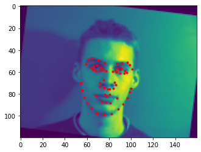
|
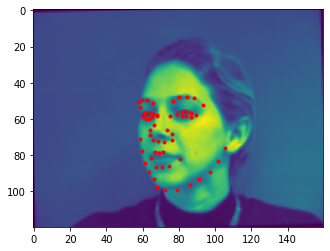
|
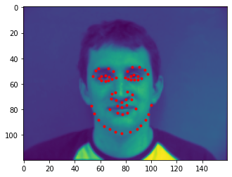
|
My neural network has 5 convolutional layers and 2 fully connected layers. The kernel sizes are from 7x7 to 3x3. Each convolutional layer is followed by a ReLU followed by a maxpool. Loss function is mean squared error loss. Adam algorithm is implemented. Learning rate is 1e-3. Training loop is 25 epoches.
I think the reason why it fails in some cases is because the number of epoches are too small for getting optimized parameters. Also the structure of network is also too simple to learn high-level features.
I randomly selected two learned filters for each conv layer.
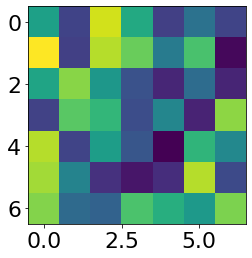
First conv layer1
|
 First conv layer2
First conv layer2
|
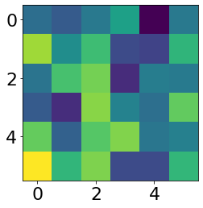
Second conv layer1
|
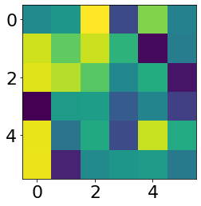
Second conv layer1
|
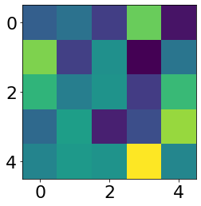
Third conv layer1
|
 Third conv layer1
Third conv layer1
|
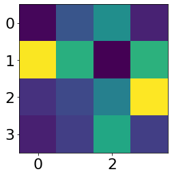
Fourth conv layer1
|
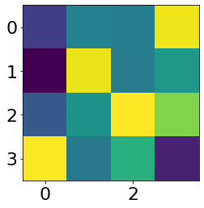
Fourth conv layer1
|
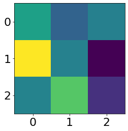
Fifth conv layer1
|
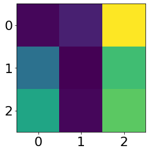
Fifth conv layer1
|
Part 3: Train With Larger Dataset
The mean absolute error of my prediction (45 epoches training) is 7.12485.
The crop is resized into 224x224. Some images from dataloader is shown below, where batch_size=1, shuffle=True, num_workers=4.
At first when i did the data augment, i tried flipping images. The loss is pretty large and result is not good. I think the reason is that the left and right part of the face is somewhat different, so it would be hard to learn features of face when flipping it. ResNet18 model with pretrained parameters is used for training. In my training process, i did not separate the dataset to be training and validation dataset for me to do the hyperparameter selection. For the first layer, I changed the input channel to be 1. Ohter parameters of the first layer are kernel_size=(7, 7), stride=(2, 2), padding=(3, 3), bias=False. The output channel number is set to be 68*2=136. Bias is set to be True. Other hyperparameters are set as the default. The number of epoches is set to be 50. I showed the loss curve of the first and the last five epoches below.
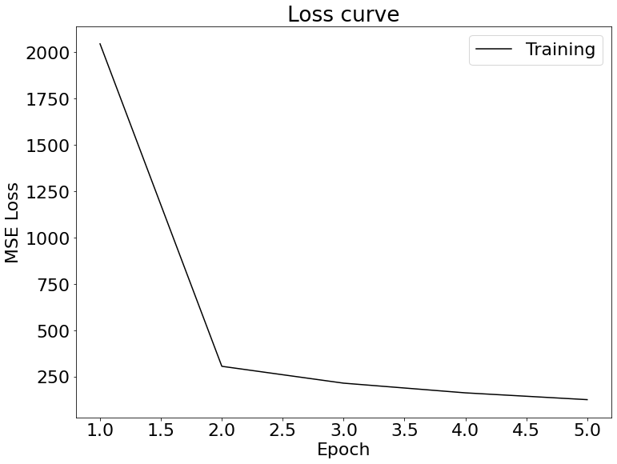
Loss curve of the first five epoches
|
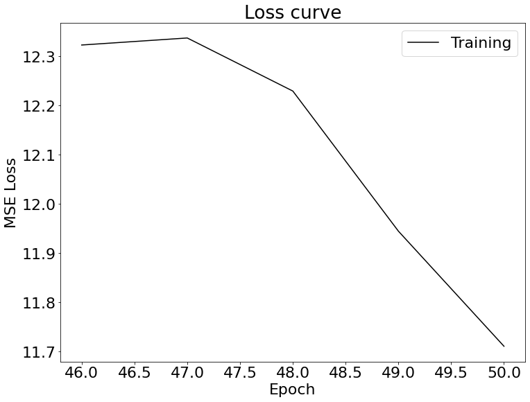
Loss curve of the last five epoches
|
Some images with the keypoints prediction in the testing set.
Then run the trained model on my dataset.
It performs good on Trump's face, but fails on my face and homelander's face.